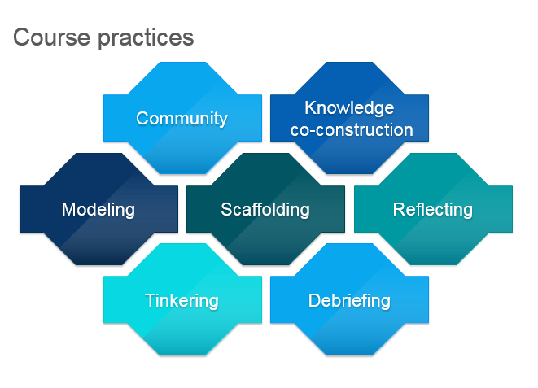

Equity by Design: Envisioning a Critical Pedagogy of Making for Educators
Angela Elkordy
National Louis University
Ayn Keneman
National Louis University
(Published September 18, 2019)
Introduction
Creating or making tools and solutions is intrinsic to being human. Interest in making as a practice, as well as its surrounding culture, has increased over the past decade, and as a phenomenon itself in many ways reflects the modern world in seemingly paradoxical ways. If considered through the high-tech lens of robotics, 3D printers, and wearable electronics, making can be viewed as embracing and championing technological tools. If considered through the lens of art, making can be interpreted as almost a longing—a celebration, in some sense—to return to the tactile arts, and an implied minimization of the technologies in our world.
So, what exactly is making? The Maker Movement? The Maker Movement conceptualized as a highly resourced, technology-intensive set of activities that has profound ramifications for who can participate or who is excluded. Consider the implications for diverse learners who may be teaching at-risk students in under-resourced environments. As a personalized yet potentially highly collaborative set of activities with the power to engage learners productively in creative problem solving, the ideas of Making should be accessible to all learners, regardless of resources. As teacher educators, responsible for the training and development of teachers, working with graduate students who teach in a wide variety of contexts, we decided to explore this idea. This article shares our experiences.
Considering Making
The concept of making is complex; its implementation and implications are highly nuanced with significant implications for all learners. “As a self-defined, grassroots movement of backyard and kitchen tinkerers, hackers, designers and inventors, the maker movement includes a range of perspectives on the definitions and purposes of making” (Vossoughi et al, 2016). For example, creating a dress which lights up through embedded electronics, a smartphone stand from binder clips, hacking existing objects to meet new purposes or designing can all be considered making. What is the difference between making something and Making? Who makes? As Vossoughi, Hooper, and Escudé note, “the ways making and equity are conceptualized can either restrict or expand the possibility that this movement will contribute to intellectually generative and liberatory pedagogical practices for working-class students and students of color” (11). Consider the defining differences in how the work of artists, artisans and craftsmen are valued and why one path is perceived differently, in that craftsmen are neither considered as creative or original as artists. The language surrounding making has the potential to be transformative or diminishing, and for learners in under-resourced contexts, this difference is crucial, leading either to the pursuit or rejection of making activities.
There are several commonalities or characteristics of the maker movement that can be useful for educators. Modern making is illustrated in the following chart:
Figure 1. Characteristics of Making.
Modern making has its own culture characterized by a framework, which includes:
Figure 2. Attributes of Making Culture.
The premise of making is growing in schools and has transformative potential in promoting student engagement and scaffolding the development of critical skills and ways of thinking. These skills for college and career preparation in the twenty-first century include problem solving, collaboration, cultivation of creativity, design thinking, and perseverance. A successful making environment in schools can nurture the development of teacher and student identities as successful learners and problem solvers, embracing individual interests and capacities.
In taking a critical stance on the application and outcomes of making, we prioritize the accessibility of the Maker philosophy, thinking and opportunities for all learners. We do this by creating a platform through our Maker coursework, writing, and research to share with teachers, many of whom work in impoverished districts, failing or troubled schools, and with at-risk students in the greater Chicago area. Our goal is to empower teachers to share with students in under-resourced schools the ways in which skill sets important to the success of Maker movement might be developed. In doing so, we hope to share the promise and possibilities of creative thinking, critical problem solving, and collaboration engineering. Teachers must become Makers and understand the possibilities of culturally relevant making using a critical pedagogy framework. This article discusses the context, goals, development, and outcomes of an online community of teacher-makers in a higher education setting in a pilot workshop, which embedded a critical pedagogy approach.
We embrace the idea that “inventing, making, tinkering, designing are indigenous practices, that is, practices that originate and occur naturally in particular ecologies” (Schwartz and Gutierrez, 577, qtd. in Vossoughi, et al, 218). In this view, the premise is that making occurs in communities and is influenced by sociocultural factors, leading to an approach based in discovery versus a deficit-based framework that would seek to superimpose the dominant form of making onto all. This also leads to the ideas of diversity in processes, products and goals of making, and culturally-relevant pedagogical approaches.
Making in Schools and Predominant Practices
The maker movement is a global movement of people who take charge of their lives, solve problems, and share how they solved them. This movement is growing in schools because these authentic learning experiences are engaging diverse learners in a community of making. The Internet has catapulted this maker movement and driven the made projects into the limelight. From kindergarten to second grade, students make things with Play-Doh, Legos, and many other materials. In the older grades, the Maker mindset is often diminished, due to the fact that the grade level curriculum does not allow for Maker time in the classroom. The Maker Movement is important as we understand that high levels of engagement are critical to the development of “lifelong learners.” This “culture of making” has the potential to change people into makers, instead of consumers. The Maker Movement has the potential to bring “technology people” and “non-technology people” alike into the world of creators and innovators. The benefits of educational makerspaces are many and varied. Makerspaces and making can have a significant impact on student learning and development. Making and tinkering are powerful and empowering ways to learn. “Ultimately, the interdisciplinary and empowering natures of these makerspaces can help prepare for a future we can’t yet imagine” (Davee, et al 10). A research study conducted by Small found that “students who participated in activities involving innovation were inquisitive, imaginative and motivated. They wanted to solve real problems that could help people” (qtd. in Moorefield-Lang 108). “When we allow students to experiment, take risks, and play with their own ideas, we give them permission to trust themselves, they begin to see themselves as learners who have good ideas and can transform their own ideas into reality” (Martinez and Stager 26). By putting the learner at the center of the educational process, each learner learns not only the content of “making,” but also learns about themselves. They become independent thinkers who will be more likely to persist in their own learning. Authentic, real-life experiences prompt children to learn and understand. Through such experiences, learners begin to work and problem-solve in a collaborative environment, learning important social skills alongside their peers. This collaborative learning helps prepare students for the their roles as adults in the future workplace.
Importance of Access to Maker Ideas and Practices
A potential problem with the spread of the Maker movement in schools is the emerging idea of maker activities being synonymous with robotics and making use of other expensive technologies. This characterization has the potential to exclude a large number of students from these important activities that develop student learning capacities and attributes. This misconception, along with other factors occurring in minority majority schools, such as poor teacher quality, lack of substantive or meaningful access or use of instructional technologies, e.g., technology-rich but pedagogy-poor circumstances, restrict student access to ideas and pedagogical strategies to foster deep, impactful learning. The long-term impact of the lack of access to quality ideas, practices, and pedagogies – particularly when the content is perceived to be aligned with economic activities – is the perpetuation of poverty status with little hope for growth.
In the beginning of the Maker movement there was a great deal of excitement both inside and outside of education. However, now the field is trying to determine what making looks like in various communities. One area that is being discussed is equity. According to Vossoughi, Escudé, and Hooper, the focus on equity in making is important because the involvement of a student’s culture in learning has a real impact on learning science and math. In some communities, making might be a sewing circuit group of students working together alongside community participants while learning about traditional clothing of a particular culture, and creating environments that model and invite students to share stories about familiar practices (such as kite making or home electronics repair). A number of scholars show the intellectual depth of everyday linguistic and cultural practices and the ways in which these can be meaningfully connected to academic concepts and identities (Gutierrez; Lee).
When we think of making and the Maker Movement in terms of providing opportunities for all students, irrespective of financial circumstances, it is important to examine and consider the complexity of placing culture, power, and equity at the center of the ongoing conversation. Currently, making is being incorporated at scale in rapid ways without adequately considering the structural changes and material and pedagogical resources required to support learning of all students (Vossoughi, et al).
Making, Designing, Engineering
A critical change for the NGSS (Next Generation Science Standards) is the shift to scientific and engineering practices. It has been our experience that teachers find the idea of integrating engineering practices into curricula particularly challenging. In designing our course around making and STEAM (Science, Technology, Engineering, Arts, and Math) activities, one of our goals was to introduce engineering ideas, particularly the process of design thinking and working within constraints or parameters to solve a problem. In the process, teachers would connect their existing practices to the newer frameworks in a process of building upon prior knowledge and sense making to understand that they often already practice the core of these ideas in some form.
Preparing Teacher-Makers from a Critical Pedagogy Perspective
Our students—teacher candidates and in-service educators—live and work in a diverse range of contexts in the greater Chicago area, ranging from affluent suburbs and private schools to urban, low-performing schools where students (and teachers) are at risk physically, emotionally, and academically. Material resources available for making range from fully equipped technology labs with 3D printers and arrays of software and electronics to environments with no supplies at all. The lack of available time for making and design activities in under-resourced or turn-around school contexts—due to the restrictive curriculum focus to core subjects aligned with standardized testing content—is particularly concerning.
Figure 3. Important capacities for learners developed through making.
We wanted our learners in the workshop—aspiring teacher-makers—to think deeply about the concepts, practices, and ways of thinking of making in order to successfully convey the ideas to empower all of their students. The course was carefully designed to model these practices and foster reflection and deep learning by immersing candidates in low or no cost making, tinkering, and hands-on learning activities. By diminishing possible barriers to participation, such as materials or equipment costs, we sought to make the ideas and practices—and the cognitive and affective benefits—easily accessible and convey that the manifestations of these practices are ecologically embedded.
Purpose of Introduction to the Maker Movement, STEAM, and Design Thinking
A PDF file of our course syllabus with our course goals can be found here.
- Understanding Maker culture: transformative, culturally-responsive, empowering, positive, collaborative
- Using a design framework (LAUNCH) that emphasizes the importance of sharing products of making with an audience
- Learning through low/no cost design challenges—choice, relevance
- Guest lecturers, e.g., 4th teacher working in the field (Tori Alland)
Course learning outcomes:
- Articulate the history and socio-cultural context of the Maker Movement and its importance to K-12 education
- Effectively design “Maker” and/or STEAM learning activities for instruction using the LAUNCH approach
- Identify science and engineering practices in maker space activities
- Apply teaching strategies to nurture creativity and design thinking in students through Maker and STEAM activities
- Create by making and designing objects and processes using a design process
Our Teacher-Makers in Training
We surveyed our ten students at the beginning of the course. Two of our students teach in pre-k through second grade, three in third through fifth grade, one in middle school, one in high school, two in special settings—sheltered kindergarten, special education, early childhood—and one as a college professor. We surveyed our students regarding their confidence in teaching technology content. The making content can be scaled to transcend technology skills and can be applied in intergenerational contexts. Our survey showed that initially, 20 percent of our group were not really confident in their technology expertise, 20 percent were confident but a little unsure of their technology expertise, 40 percent were neutral, and 20 percent of our students were confident in their technology expertise. Throughout the course, our teacher-learners gained both an expanded view of technology and confidence in its use.
Another area on which we surveyed our students was their strengths as learners. We found that our students were eager to learn new things, curious and organized, loved teaching, knew their preferences in learning (visual/auditory learners), enjoyed observing other teachers, and were reflective educators. This survey information helped us get to know our students at a deeper level as we learned together during our course.
Pedagogical Approach: Course Practices

Figure 4. Course practices.
Education research has consistently viewed community as critical to support collaborative learning and discourse associated with higher levels of learning. The nature of online communication and the probability for disconnectedness has focused attention on the issue of community building. There is evidence that a sense of community is significantly associated with perceived learning (Shea).
In developing our course, we kept in mind the tenets of a community of inquiry model, paying attention to social, teaching, and cognitive presence (Garrison and Archer). Specifically, we focused on purposeful creation of community, knowledge co-creation and sharing of mental models, modeling, clear expectations and scaffolding learning, reflection through journaling, and student feedback. We also created our course with low-cost making projects in mind to benefit all the learners we taught.
Purposeful Creation of Community
In designing our course, we started with an online discussion forum to introduce all of us to each other. Sample questions included: Who are you? What do you teach? What do you hope to learn? What are your summer adventures? and What are you making this summer? Our students are a diverse group of teachers—kindergarten, elementary, middle school math, special education, high school (Art and Tech), and a college professor. They also are diverse in school contexts—private and public schools, suburban and urban. We were able to begin building purposeful, meaningful relationships with our students during our first online discussion.
Knowledge Co-creation and Sharing of Mental Models
We required weekly online discussions where we participated and learned with our students, thus co-constructing knowledge together. We were reminded as we worked with our students that both scaffolding and modeling are essential for learners to engage in these complex processes. Taking time during the initial design process of the course to think through what learners are expected to know and be able to do by the end of course facilitated the co-construction of knowledge through our weekly discussions. This process helped us understand our learners better, strengthening the learning experience for all of our students.
We shared mental models of content throughout the online modules we designed. In this way, the teachers’ experience was a reflection of what we hoped our candidates would do in their own classrooms.
Figure 5. Paola measures to create a cardboard phone stand.
Figure 6. It's not quite working out as planned.
Figure 7. Improvisation is successful!

Figure 8. Mission accomplished!
We invited teachers to Hack the Classroom by creating new materials they needed for the forthcoming school year. Jennifer, a first-grade teacher, created her own instructional materials:
Figure 9. Screenshot of Jennifer's hack the classroom instructional materials.
Interim stage:
Figure 10. Jennifer's materials, printed and bound.
Figure 11. Colorful books with velcro letters.
Clear Expectations and Interactive Modeling
It was important to consistently model for our students during our online work together. The teachers’ experiences were a reflection of what we hoped they would do in the classroom and the modeling provided them with a visual that they could carry into the classroom. Developing our course with interactive modeling in mind not only facilitated our students’ learning, but also helped them learn exactly why the procedure was important to engage their students in active learning.
Scaffolding Development Around an Accessible Model of Making
We used the LAUNCH framework (a K-12 Design Thinking Framework; see Juliani and Spencer) as the course text. This framework guided our work with our students and included instructional supports and a clear introduction to the design process. The steps of the LAUNCH cycle are as follows:
- L ook, listen and learn
- A sk tons of questions
- U nderstand the process or problem
- N avigate ideas
- C reate a prototype
- H ighlight and fix, then—LAUNCH to an audience
By implementing this technique in our course, we tapped into our students’ curiosity and allowed them to test, create, and recreate until they were eventually able to design the final project to share with one another.
Design Challenges through Teacher Tinker Exercises
The design challenges in our course were built around low-cost objects and aligned with NGSS practices. Our students experienced the ideas of making through a distributed Maker community. Our Teacher Tinker Design Challenges included a Robot Hand Science Project, a Cardboard Challenge, Hacking the Classroom, and Tinkering with Time. It was exciting to experience the learning journey with our students as they deconstructed and examined the ideas together, both through scaffolded online discussion posts and during Zoom web-conferencing sessions. Their final projects as Teachers Tinkering was evidence of deep learning and understanding of the course objectives.
Reflection through Journaling
Journal writing benefits students by enhancing reflection, facilitating critical thought, and helping the writer understand their own metacognitive processes in learning new content. Additionally, the discussion boards and multimedia digital journals threaded throughout the course helped the students deconstruct their making experiences. It was powerful for us at the end of the course to reread our student journals describing each individual student’s learning journey as well as perspectives on making from such a diverse group of students covering a wide grade span of teaching: kindergarten to undergraduate.
Student Feedback
We designed our course with ongoing formative assessment in mind. Our journal topics included: Teacher Tinker activities, Journey to Making, and a final STEAM project design plan. The feedback we gave our students was ongoing and individualized based on the learners’ respective prior knowledge and the outcome of each weekly module. Our questions included “thinking about your thinking,” e.g., “Did you follow instructions, if so, what format did you follow, verbal, from a person, video or other digital media, blog post. If you were ever to try this again, what changes would you make?” We also asked our students to reflect on prior experiences and how their experience in our course differed from other courses. Through our course boards, discussions, and surveys we provided ongoing formative feedback to our students during our time together. Our final design projects reflected the impact of this feedback loop, especially when the students shared their final projects with all of us. By sharing our projects, we gave a purpose to the work, and students had an opportunity to explain their thinking online with each other. Additionally, it gave students the opportunity to see their projects with new eyes, and they were able to revise if necessary.
Designing Maker Activities from a Critical Pedagogy Perspective
The critical pedagogy perspective for making is assisting students of all ages to question and problem-solve. From a teaching and learning perspective, this translates to giving students agency. Their capacity to act on objects and technologies rests in the belief that the relationship between learning and the objects are malleable (Bullock). Learning through the making of things is constructivism in action. If you are working with learners in a maker space, you are a facilitator of constructivism.
Another important component of the Maker Movement and critical pedagogy is access to ideas. The rapidly changing demographics of our classrooms has resulted in linguistic and cultural diversity across the United States. Advocates of critical pedagogy assert that teachers must become learners alongside their students. As we become learners, we are learning about our students’ cultures and have opportunities through the Maker Movement to learn about the culture, customs, and lived experiences of our students.
To most, a Maker is someone who makes things. Creating a community where makers can come together around powerful ideas is a critical aspect of the Maker movement. As one of our students noted, time spent in Make Space activities “helps us understand what we are capable of.” The Maker Movement offers the potential to make classrooms more student-centered, relevant, and sensitive to the strengths of each individual learner. We saw firsthand the importance of creating a Maker Community in our online course where all students problem solve, create, and design together and share their thinking.
Every classroom can become a makerspace where students and teachers can learn together through direct experience with an assortment of high and low-tech materials (Martinez and Stager). Though we hear more about 3D printers and other expensive materials in Maker Spaces, we were able to provide out students with a beneficial experience by keeping the costs of materials to a minimum. We found that our students were creative in finding materials at home or outside that were low cost. We discovered together that cardboard is a great resource for Maker projects: tissue boxes, toilet paper rolls, and boxes became our favorite materials. Also, straws, plastic bottles and jars, and containers were very useful. Once we looked around, we realized that low cost Maker activities were possible. As we found, even the simplest projects deserved the spotlight, and we think that even our students were surprised at what they were able to accomplish with low tech Maker materials.
Teacher Tinker Projects
An assignment that we created for our students was nested in the theme of Teacher Tinker projects. We added the following prompts for the students to facilitate sharing in our online course: “Take pictures as you work though the instructions (minimum 3), then reflect on your design process. What questions did you have? How did you resolve any issues? did you try more than once? how did you feel as you moved through the project? Post your pics and responses here in this discussion thread—or if you chose to blog about it, please share the link here. Respond to at least one colleague.”
The students shared their final projects: Robotic Hand, Cardboard Challenge, and Hacking the Classroom. The students created a wide variety of projects using low-tech, low-cost materials, as well as projects involving family members and drawing upon summer experiences. The students appreciated the opportunity to create low-tech projects with family members, using materials at their fingertips.
Below are examples of our student projects:
Robotic Hand
Figure 12. Sample Robotic Hand Student Project #1. View a PDF of the project here.
Figure 13. Sample Robotic Hand Student Project #2. View a PDF of the project here.
Cardboard Challenge
Figure 14. Cardboard Challenge Student Project. View PDFs of these projects here and here.
Hacking the Classroom
Figure 15. Hacking the Classroom Student Projects. View PDFs of these projects here and here.
Maker Musings: Reflection Blog
An activity that particularly resonated with the teacher-makers was a task to design a solution to a problem encountered in a literature source they used with students. They were asked to select a book from the Novel Engineering website that was designed and supported by Tufts University’s Center for Engineering Education and Outreach. Integrating the idea of literacy and authentic problem solving into the task of teaching engineering practices allows teachers to build upon familiar practices with confidence. Here are two exceptional examples from one of our teacher-makers:
1. “For this activity, I decided to use the book A Long Walk to Water by Linda Sue Park. The character in this story, Nya, walks long distances to retrieve water [in Sudan]. One of the problems identified by students was the lack of necessary shoes. For my ‘make’ I decided to work with my daughter to design a shoe which would be easy to repair and would keep thorns out. We used items we found around the house. We made them out of cardboard, reinforced with three layers of foam.”
2. “It is the Colonial Era (1565-1776) and one of the problems the people face is a lack of clean water. Below are several pictures of a filtration system I tried out that involves heat and my background knowledge of the water cycle. This maker activity was inspired by the book If You Lived in Colonial Times.”
Figure 16. “Collect the dirty water. Heat it up in a kettle and cover the top tightly with aluminum foil. Leave the opening uncovered for the next step.”
Figures 17 and 18. “Create a tube to transport the evaporation into another container.”
Figure 19. “The vapor will go through condensation. Once the droplets are too heavy, they will precipitate into the container as water. It’s a slow process, but there you have it!” – Paola
Envisioning a Critical Pedagogy: Next Steps
Figure 20. Envisioning a critical pedagogy for Making in schools
In the spirit of design-thinking, we have several ideas for modifications to our course and pedagogical framework to describe, convey, and practice a critical pedagogy suitable for our teacher-makers to implement in their classrooms. Some of our next steps are to:
- Continue developing and expanding the online, collaborative aspects of the course, including small group work and participant meetings outside of the class meetings.
- Encourage teachers to explore – through purposeful discovery – the cultural objects, processes, and practices of making in their students’ communities.
- Conduct our own research to understand the impact of teachers who were in the course and in future workshops.
- Redesign the workshop to include greater emphasis on Critical Pedagogy through readings and reflections.
Ten Tips for Educators Interested in Establishing an Authentically Inclusive Maker Program or Activities
- Your learners are already makers and have family who are Makers. Connect to prior knowledge and experience. This is a great place to fit in some culturally appropriate pedagogy. For example, learning how to roll stuffed grape leaves is an iterative practice for Middle Eastern families.
- A crucial component of making is the unique features of Maker communities. Designing the environment for equity and inclusion takes purposeful planning and is ecologically based. What kinds of resources and constraints are in the learning context? What funds of knowledge can your learners leverage as strengths?
- Encourages the 4 Cs (creativity, critical thinking, collaboration, and community). These are essential skills for all digital age students, even if their access to digital technologies is limited.
- Making is experienced and enacted through a social lens. Explicitly teach and model skills required to successfully participate in communities of makers, for example, how to be accepting, encouraging, and collaborative.
- Understand that making or tinkering and making something can be very different. Creativity needs a springboard, an authentic purpose or problem, and requires structure or a goal. Our teacher-makers found that they struggled to “find something to make” while approaching the goal-oriented problem of our design-challenges quite differently.
- Remember that Engineering is solving a problem within specifications or constraints. Keep design-challenges simple initially and build upon existing practices or content areas, for example, language learning, history, or social sciences in addition to traditional science.
- Use low- or no-cost materials to start. Using cardboard, binder clips, office supplies, or recycled materials does not diminish the ideas and practices of making.
- Teach a framework for design thinking. Create connections to unpack the design processes and make them visible.
- Characterize familiar processes as parts of the design cycle to promote understanding. Ask probing question about the makers in student families and how they refine practices or products. For example, what kinds of problems are encountered when learning how to make stuffed grape leaves? How are the issues resolved?
- Share explicit examples for community-building questions and practices. Model how to ask probing questions to prompt reflection and create shared values.
Our teacher-learners were excited to share their ideas with their own students. They regarded the ideas of the Maker and design course as Important (75%) or Very important with the potential to be transformative (25%). In their own words:
- “I am definitely going to incorporate design thinking into my literacy studies as it is connected to language development.”
- “Well, my work will revolve around letting teacher candidates better understand how their information on design thinking will and can impact their teaching and their classrooms.”
- “I am implementing it [Maker ideas] into my provocation centers and Passion Projects.”
- “The ideas of creating and designing are easily incorporated into my teaching because I want to stress exploration and resilience in our classroom. It is important that my students learn that it is okay to make mistakes and they are an important part of the learning process.”
- “Allow time for students to work together through challenges that require failure leading to success.”
- “I can incorporate more inquiry-based lessons in which students need to work collaboratively with their peers to come up with a solution to a problem. We will go through the design thinking process as a group while explicitly showing what sorts of things you should do at each stage, and then I will have the kids go through it in groups.”
- “[I will] focus on the discovery and interpretation parts.” “By tying more of what we do to real world problems, especially ones that students are concerned about.”
Making is participatory learning through which learners can leverage their own funds of knowledge while collaborating with others. Carefully designed, contextually bound Maker activities can be powerful in their capacity to be inclusive, authentic, and celebratory of diverse talents and inquiries:
Making has never felt so relaxing. It has given me the chance to involve my family members, especially those who have always felt incompetent because of their lack of education. I cannot express in words how good it felt to see my father's face light up when I asked him to help me set up my brand new folding pocket knife. He has never felt so useful when it comes to my academic work. (English as a Second Language Teacher-learner)
Through the course, our teacher-learners collaborated to share concepts, procedures, questions, and processes. Perhaps most importantly, their conceptualization of Making and the development of successful learning habits—such as critical problem identification and solving, persistence, curiosity, and agency—has potential to become a pedagogy of equity and inclusion.
Acknowledgements
Many thanks to our students, especially Danielle Goebbert, Paola Bribiesca, Jennifer Dunmore, and Tori Alland for sharing their work, and to all of our educator students for their dedication, inspiration, and sense of adventure in learning.
Works Cited
Au, Wayne. “High Stakes Testing and Curricular Content: A Qualitative Metasynthesis.” Educational Researcher, vol. 36, no. 5, Jun. 2007, pp. 258-267.
Bullock, Shawn. “Digital Technologies in Teacher Education: From Mythologies to Making.” Building Bridges: Rethinking Literacy Teacher Education in a Digital Era, edited by Clare Kosnik, et al, Sense Publishers, 2016, pp. 3-16.
Burke, John. Makerspaces: A Practical Guide for Librarians. Vol. 8, Rowman & Littlefield, 2014.
Davee, Steve, Regalla, Lisa, & Chang, Stephanie. “Makerspaces: Highlights of Select Literature.” Maker Education Initiative. 2015. Retrieved from http://makered.org/wp-content/uploads/2015/08/Makerspace-Lit-Review-5B.pdf.
Digital Promise. “Envisioning a Culturally Relevant Maker Program.” 2017. Retrieved from http://digitalpromise.org/wp-content/uploads/2017/06/Envisioning-a-culturally-relevant-maker-learning-program.pdf.
Garrison, D. Randy, Anderson, Terry, and Archer, Walter. “A Theory of Critical Inquiry in Online Distance Education.” Handbook of distance education. Edited by Michael Graham Moore and William G. Anderson, Mahwah, NJ: Erlbaum, 2003, pp. 113-128.
Hamilton, Laura S. et al. Standards-Based Accountability Under No Child Left Behind: Experiences of Teachers and Administrators in Three States. Santa Monica, CA: Rand. 2007.
Henley, Patricia. The Hummingbird House. Denver, CO: MacMurray and Beck, 1999.
Ito, Mizuko, et al. Connected Learning: An Agenda for Research and Design. Pensauken, NJ: BookBaby, 2013.
Johnson, Larry et al. NMC Horizon Report: 2015 K-12 Edition. Austin, Texas: The New Media Consortium, 2015. Retrieved from cdn.nmc.org/media/2015-nmc-horizon-report-k12-EN.pdf.
Kurti, R. Steven, Kurti, Deborah, and Fleming, Laura. “Practical Implementation of an Educational Makerspace: Part 3 of Making an Educational Makerspace.” Teacher Librarian, vol. 42, no. 2, 2014, pp. 20-24. Retrieved from http://www.teacherlibrarian.com/2014/12/17/educational-makerspaces-2.
Lee, Okhee. "Culture and Language in Science Education: What Do We Know and What Do We Need to Know?" Journal of Research in Science Teaching, vol. 38, no. 5, 2001, pp. 499-501.
Martinez, Sylvia and Stager, Gary. Invent to Learn: Making, Tinkering, and Engineering in the Classroom. Torrance, CA: Constructing Modern Knowledge Press, 2013.
— The Maker Movement: A Learning Revolution. 2014. Retrieved from http://www.iste.org/explore/articledetail?articleid=106.
McMurrer, Jennifer. Choices, Changes, and Challenges: Curriculum and Instruction in the NCLB Era. Washington, DC. Center on Education Policy. 2007.
Moorefield-Lang, Heather. “Change in the Making: Makerspaces and the Ever-Changing Landscape of Libraries.” Techtrends, vol. 59, no. 3, 2015, pp. 107-112. Retrieved from https://doi.org/10.1007/s11528-015-0860-z.
Ogbu, John U., and Herbert D. Simons. “Voluntary and Involuntary Minorities: A Cultural‐Ecological Theory of School Performance with Some Implications for Education.” Anthropology & Education Quarterly, vol. 29, no. 2, 1998, pp. 155-188.
Peppler, Kylie, and Bender, Sophia. “Maker Movement Spreads Innovation One Project at a Time.” The Phi Delta Kappan, vol. 95, no. 3, 2013, pp. 22–27. Retrieved from http://www.jstor.org/stable/23611809.
Reich, Justin and Ito, Mizuko. From Good Intentions to Real Outcomes: Equity by Design in Learning Technologies. 2017. Retrieved from http://dmlhub.net/publications/good-intentions-real-outcomes-equity-design-learning-technologies.
Schwartz, Lisa, and Gutierrez, Kris. “Literacy Studies and Situated Methods: Exploring the Social Organization of Household Activity and Family Media Use.” The Routledge Handbook of Literacy Studies. New York: Routledge, 2015.
Shea, Peter, Li, Chun Sau, and Pickett, Alexandra. “A Study of Teaching Presence and Student Sense of Learning Community in Fully Online and Web-Enhanced College Courses.” The Internet and Higher Education, vol. 9 no. (3), 2006, pp. 175-190.
Small, Ruth V. “The Motivational and Information Needs of Young Innovators: Stimulating Student Creativity and Inventive Thinking.” School Library Research, vol. 17, 2014. Retrieved from http://www.ala.org/aasl/sites/ala.org.aasl/files/content/aaslpubsandjournals/slr/vol17/SLR_MotivationalNeeds_V17.pdf.
Spencer, John and Juliani, A. J. LAUNCH: Using Design Thinking to Boost Creativity and Bring Out the Maker in Every Student. San Diego, CA: Dave Burgess Consulting, Inc., 2016.
Valli, Linda and Buese, Daria. “The Changing Roles of Teachers in an Era of High Stakes Accountability.” American Research Journal, vol. 44 no. 3, 2007, pp. 519-558.
Vossoughi, Shirin, Paula K. Hooper, and Meg Escudé. “Making Through the Lens of Culture and Power: Toward Transformative Visions for Educational Equity.” Harvard Educational Review vol. 86, no. 2, 2016, pp. 206-232.